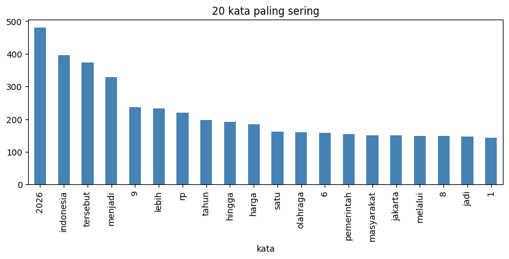
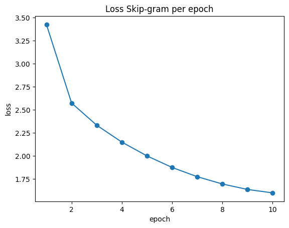
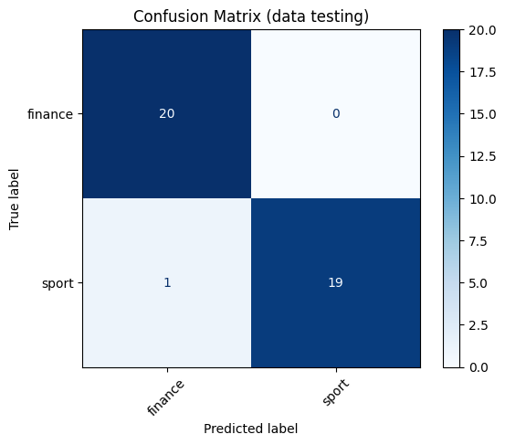

Skip-gram Manual (NumPy) — Vector Space Model Berita#
Alur (sesuai arahan dosen):
Ambil data
Bersihkan data (buang simbol)
Hapus stopword
Tentukan jumlah kata unik
Skip-gram dengan
vector_size = 100Pembagian data: 200 berita → training 160, testing 40 (80:20)
Tampilkan Vector Space Model: 160 × 100
Tambahkan label → 160 × 101 kolom
(Opsional) Klasifikasi Naive Bayes dan evaluasi
Skip-gram dibuat manual dengan NumPy (tanpa Gensim). Kolom teks dan label dideteksi otomatis; jika gagal, isi
TEXT_COLdanLABEL_COLdi cell konfigurasi.
0. Import & Konfigurasi#
import re, os, time, itertools
from collections import Counter
import numpy as np
import pandas as pd
import matplotlib.pyplot as plt
from scipy.sparse import csr_matrix
from sklearn.model_selection import train_test_split
SEED = 42
np.random.seed(SEED)
# ===== KONFIGURASI =====
DATA_PATH = "../data/dataset_berita_200.xlsx"
TEXT_COL = None # None = deteksi otomatis
LABEL_COL = None # None = deteksi otomatis
VECTOR_SIZE = 100 # sesuai dosen
WINDOW = 5 # ukuran konteks (boleh diubah: 2, 3, 5, ...)
EPOCHS = 10
NEG_SAMPLES = 5 # negative sampling
LR = 0.05
BATCH_SIZE = 2048
MAX_PAIRS = None # None = pakai semua pasangan; isi angka (mis. 200_000) agar lebih cepat
TEST_SIZE = 0.20 # 200 data -> train 160, test 40
1. Ambil Data#
df = pd.read_excel(DATA_PATH)
print("Shape:", df.shape)
print("Kolom:", df.columns.tolist())
df.head()
Shape: (200, 4)
Kolom: ['id', 'isi_berita', 'label', 'url']
| id | isi_berita | label | url | |
|---|---|---|---|---|
| 0 | 1 | Chef de Mission (CdM) Indonesia Todotua Pasari... | sport | https://sport.detik.com/sport-lain/d-8655308/c... |
| 1 | 2 | Banjir besar melanda Nagoya, Jepang, menjelang... | sport | https://sport.detik.com/sport-lain/d-8655303/a... |
| 2 | 3 | Ketua Umum Komite Olimpiade Indonesia (KOI) Ra... | sport | https://sport.detik.com/sport-lain/d-8655067/k... |
| 3 | 4 | Persaingan titel juara dunia semakin ketat men... | sport | https://sport.detik.com/moto-gp/d-8654776/moto... |
| 4 | 5 | Sektor ganda campuran kembali mengalami peromb... | sport | https://sport.detik.com/raket/d-8654666/ganda-... |
def find_col(candidates, cols):
for cand in candidates:
for c in cols:
if cand in str(c).lower():
return c
return None
if TEXT_COL is None:
TEXT_COL = find_col(["isi", "konten", "content", "teks", "text", "berita", "judul", "title"], df.columns)
if LABEL_COL is None:
LABEL_COL = find_col(["kategori", "category", "label", "kanal", "topik"], df.columns)
print("Kolom teks :", TEXT_COL)
print("Kolom label :", LABEL_COL)
assert TEXT_COL and LABEL_COL, "Isi TEXT_COL dan LABEL_COL secara manual di cell konfigurasi!"
df = df[[TEXT_COL, LABEL_COL]].dropna().reset_index(drop=True)
df.columns = ["teks", "label"]
print("Jumlah data:", len(df))
print(df["label"].value_counts())
Kolom teks : isi_berita
Kolom label : label
Jumlah data: 200
label
sport 100
finance 100
Name: count, dtype: int64
2. Bersihkan Data (Buang Simbol)#
Langkah: lowercase → hapus URL → buang simbol/tanda baca → pecah menjadi kata (tokenisasi). Angka dipertahankan agar konteks (harga, skor, tahun) tidak hilang.
URL_PATTERN = re.compile(r"(https?://\S+|www\.\S+)")
def bersihkan(teks):
teks = str(teks).lower() # huruf kecil
teks = URL_PATTERN.sub(" ", teks) # hapus URL
teks = re.sub(r"[^a-z0-9\s]", " ", teks) # buang simbol (angka tetap)
teks = re.sub(r"\s+", " ", teks).strip() # rapikan spasi
return teks
df["teks_bersih"] = df["teks"].apply(bersihkan)
print("SEBELUM:", df["teks"].iloc[0][:250], "...\n")
print("SESUDAH:", df["teks_bersih"].iloc[0][:250], "...")
SEBELUM: Chef de Mission (CdM) Indonesia Todotua Pasaribu terus memonitoring kondisi di Nagoya, Jepang jelang Asian Games 2026. Itu setelah adanya banjir besar yang menimpa kota tersebut.
Hal tersebut ditekankan Todo, sapaan karibnya, karena berkaitan dengan ...
SESUDAH: chef de mission cdm indonesia todotua pasaribu terus memonitoring kondisi di nagoya jepang jelang asian games 2026 itu setelah adanya banjir besar yang menimpa kota tersebut hal tersebut ditekankan todo sapaan karibnya karena berkaitan dengan konting ...
3. Hapus Stopword#
try:
from Sastrawi.StopWordRemover.StopWordRemoverFactory import StopWordRemoverFactory
STOPWORDS = set(StopWordRemoverFactory().get_stop_words())
print("Sumber stopword: Sastrawi")
except Exception:
try:
import nltk
nltk.download("stopwords", quiet=True)
from nltk.corpus import stopwords
STOPWORDS = set(stopwords.words("indonesian"))
print("Sumber stopword: NLTK")
except Exception:
STOPWORDS = set("yang dan di ke dari untuk pada dengan ini itu adalah akan juga tidak dalam oleh atau sebagai karena telah sudah saat para ada mereka kami kita saya anda ia lebih dapat bisa hanya masih lagi".split())
print("Sumber stopword: daftar bawaan (disarankan: pip install Sastrawi)")
print("Jumlah stopword:", len(STOPWORDS))
def hapus_stopword(teks):
return [w for w in teks.split() if w not in STOPWORDS]
df["tokens"] = df["teks_bersih"].apply(hapus_stopword)
print("\nJumlah kata sebelum stopword:", df["teks_bersih"].str.split().str.len().sum())
print("Jumlah kata sesudah stopword :", df["tokens"].str.len().sum())
print("\nContoh token:", df["tokens"].iloc[0][:25])
Sumber stopword: Sastrawi
Jumlah stopword: 123
Jumlah kata sebelum stopword: 69050
Jumlah kata sesudah stopword : 53115
Contoh token: ['chef', 'de', 'mission', 'cdm', 'indonesia', 'todotua', 'pasaribu', 'terus', 'memonitoring', 'kondisi', 'nagoya', 'jepang', 'jelang', 'asian', 'games', '2026', 'adanya', 'banjir', 'besar', 'menimpa', 'kota', 'tersebut', 'tersebut', 'ditekankan', 'todo']
4. Tentukan Jumlah Kata Unik#
semua_kata = list(itertools.chain.from_iterable(df["tokens"]))
freq_all = Counter(semua_kata)
print("Total kata (token) :", len(semua_kata))
print("Jumlah kata UNIK :", len(freq_all))
top = pd.DataFrame(freq_all.most_common(20), columns=["kata", "frekuensi"])
display(top)
top.set_index("kata")["frekuensi"].plot(kind="bar", figsize=(10, 3.5), color="steelblue",
title="20 kata paling sering")
plt.show()
Total kata (token) : 53115
Jumlah kata UNIK : 7810
| kata | frekuensi | |
|---|---|---|
| 0 | 2026 | 481 |
| 1 | indonesia | 396 |
| 2 | tersebut | 374 |
| 3 | menjadi | 329 |
| 4 | 9 | 236 |
| 5 | lebih | 232 |
| 6 | rp | 220 |
| 7 | tahun | 198 |
| 8 | hingga | 191 |
| 9 | harga | 184 |
| 10 | satu | 161 |
| 11 | olahraga | 159 |
| 12 | 6 | 157 |
| 13 | pemerintah | 155 |
| 14 | masyarakat | 150 |
| 15 | jakarta | 150 |
| 16 | melalui | 149 |
| 17 | 8 | 148 |
| 18 | jadi | 146 |
| 19 | 1 | 142 |

5. Pembagian Data (Training 160 : Testing 40)#
Stratified agar proporsi kelas seimbang. Skip-gram hanya dilatih dari data training supaya tidak ada kebocoran informasi dari data testing.
idx = np.arange(len(df))
idx_train, idx_test = train_test_split(idx, test_size=TEST_SIZE, stratify=df["label"], random_state=SEED)
docs_train, y_train = df["tokens"].iloc[idx_train].tolist(), df["label"].iloc[idx_train].values
docs_test, y_test = df["tokens"].iloc[idx_test].tolist(), df["label"].iloc[idx_test].values
print(f"Training: {len(docs_train)} | Testing: {len(docs_test)}")
print("\nDistribusi kelas:")
print(pd.DataFrame({"train": pd.Series(y_train).value_counts(),
"test": pd.Series(y_test).value_counts()}))
Training: 160 | Testing: 40
Distribusi kelas:
train test
finance 80 20
sport 80 20
6. Skip-gram (vector_size = 100)#
Tahapan: kata unik + ID → pasangan (kata pusat, kata konteks) lewat sliding window → pelatihan Skip-gram (Negative Sampling) → tabel bobot (vektor padat) tiap kata.
6.1 Kata Unik & ID (dari data training)#
freq_train = Counter(w for d in docs_train for w in d)
id2word = [w for w, _ in freq_train.most_common()]
word2id = {w: i for i, w in enumerate(id2word)}
freq = np.array([freq_train[w] for w in id2word], dtype=np.float64)
print("Kata unik pada data training:", len(id2word))
print("Contoh ID:", {w: word2id[w] for w in id2word[:8]})
Kata unik pada data training: 6911
Contoh ID: {'2026': 0, 'indonesia': 1, 'tersebut': 2, 'menjadi': 3, 'lebih': 4, '9': 5, 'rp': 6, 'harga': 7}
6.2 Pasangan Kata Pusat & Kata Konteks (Sliding Window)#
def make_pairs(docs_ids, window):
centers, contexts = [], []
for ids in docs_ids:
n = len(ids)
for off in range(1, window + 1):
if n > off:
centers += [ids[:-off], ids[off:]]
contexts += [ids[off:], ids[:-off]]
return np.concatenate(centers), np.concatenate(contexts)
# Demo pasangan pada 8 kata pertama dokumen pertama
demo = docs_train[0][:8]
print("Kata :", demo, f"(window={WINDOW})")
demo_pairs = [(demo[i], demo[j]) for i in range(len(demo))
for j in range(max(0, i - WINDOW), min(len(demo), i + WINDOW + 1)) if i != j]
print("Contoh pasangan (pusat -> konteks):", demo_pairs[:8], "...")
docs_ids = [np.array([word2id[w] for w in d], dtype=np.int64) for d in docs_train if len(d) > 1]
centers, contexts = make_pairs(docs_ids, WINDOW)
print("\nTotal pasangan latih:", f"{len(centers):,}")
Kata : ['jakarta', 'bandara', 'halim', 'perdanakusuma', 'melayani', 'penerbangan', 'hari', 'ditutup'] (window=5)
Contoh pasangan (pusat -> konteks): [('jakarta', 'bandara'), ('jakarta', 'halim'), ('jakarta', 'perdanakusuma'), ('jakarta', 'melayani'), ('jakarta', 'penerbangan'), ('bandara', 'jakarta'), ('bandara', 'halim'), ('bandara', 'perdanakusuma')] ...
Total pasangan latih: 421,090
6.3 Pelatihan Skip-gram#
def sigmoid(x):
return 1.0 / (1.0 + np.exp(-np.clip(x, -10, 10)))
def scatter_add(M, idx, values):
# M[idx] += values (idx boleh berulang); lebih cepat dari np.add.at
S = csr_matrix((np.ones(len(idx)), (idx, np.arange(len(idx)))), shape=(M.shape[0], len(idx)))
M += S @ values
def train_skipgram(centers, contexts, freq, vector_size, epochs=EPOCHS, neg=NEG_SAMPLES,
lr0=LR, batch=BATCH_SIZE, max_pairs=MAX_PAIRS, seed=SEED):
rng = np.random.default_rng(seed)
V, D = len(freq), vector_size
# distribusi negative sampling ~ frekuensi^0.75
p = freq ** 0.75; p /= p.sum()
neg_table = np.repeat(np.arange(V), np.maximum((p * 200_000).astype(int), 1))
W_in = rng.uniform(-0.5 / D, 0.5 / D, (V, D)) # vektor kata (hasil akhir)
W_out = np.zeros((V, D)) # vektor konteks
n_use = len(centers) if max_pairs is None else min(len(centers), max_pairs)
total_steps = epochs * int(np.ceil(n_use / batch)); step = 0
losses, t0 = [], time.time()
print(f"vocab={V} | dim={D} | pasangan/epoch={n_use:,}")
for ep in range(epochs):
sel = rng.permutation(len(centers))[:n_use]
c_all, o_all = centers[sel], contexts[sel]
ep_loss = 0.0
for s in range(0, n_use, batch):
c, o = c_all[s:s + batch], o_all[s:s + batch]
B = len(c)
negs = neg_table[rng.integers(0, len(neg_table), (B, neg))]
lr = lr0 * max(1 - step / total_steps, 0.05); step += 1
v, u_pos, u_neg = W_in[c], W_out[o], W_out[negs]
s_pos = sigmoid(np.sum(v * u_pos, axis=1))
s_neg = sigmoid(np.einsum("bd,bkd->bk", v, u_neg))
ep_loss += (-np.log(s_pos + 1e-9) - np.log(1 - s_neg + 1e-9).sum(1)).sum()
g_pos, g_neg = s_pos - 1, s_neg
grad_v = g_pos[:, None] * u_pos + np.einsum("bk,bkd->bd", g_neg, u_neg)
scatter_add(W_out, o, -lr * g_pos[:, None] * v)
scatter_add(W_out, negs.ravel(), -lr * (g_neg[:, :, None] * v[:, None, :]).reshape(-1, D))
scatter_add(W_in, c, -lr * grad_v)
losses.append(ep_loss / n_use)
print(f" epoch {ep+1}/{epochs} | loss={losses[-1]:.4f} | lr={lr:.4f} | {time.time()-t0:.1f} dtk")
return W_in, losses
W, losses = train_skipgram(centers, contexts, freq, VECTOR_SIZE)
plt.plot(range(1, len(losses) + 1), losses, marker="o")
plt.title("Loss Skip-gram per epoch"); plt.xlabel("epoch"); plt.ylabel("loss"); plt.show()
vocab=6911 | dim=100 | pasangan/epoch=421,090
epoch 1/10 | loss=3.4262 | lr=0.0450 | 9.8 dtk
epoch 2/10 | loss=2.5744 | lr=0.0400 | 19.4 dtk
epoch 3/10 | loss=2.3332 | lr=0.0350 | 30.8 dtk
epoch 4/10 | loss=2.1501 | lr=0.0300 | 38.4 dtk
epoch 5/10 | loss=2.0004 | lr=0.0250 | 47.2 dtk
epoch 6/10 | loss=1.8751 | lr=0.0200 | 56.5 dtk
epoch 7/10 | loss=1.7746 | lr=0.0150 | 64.2 dtk
epoch 8/10 | loss=1.6957 | lr=0.0100 | 71.4 dtk
epoch 9/10 | loss=1.6363 | lr=0.0050 | 78.3 dtk
epoch 10/10 | loss=1.5992 | lr=0.0025 | 84.6 dtk

6.4 Tabel Bobot Kata (Vektor Padat)#
dim_cols = [f"dim_{i+1}" for i in range(VECTOR_SIZE)]
df_kata = pd.DataFrame(W, index=id2word, columns=dim_cols)
print("Ukuran tabel bobot kata (kata unik x vector_size):", df_kata.shape)
df_kata.head(10)
Ukuran tabel bobot kata (kata unik x vector_size): (6911, 100)
| dim_1 | dim_2 | dim_3 | dim_4 | dim_5 | dim_6 | dim_7 | dim_8 | dim_9 | dim_10 | ... | dim_91 | dim_92 | dim_93 | dim_94 | dim_95 | dim_96 | dim_97 | dim_98 | dim_99 | dim_100 | |
|---|---|---|---|---|---|---|---|---|---|---|---|---|---|---|---|---|---|---|---|---|---|
| 2026 | -0.383230 | -0.245606 | 0.741705 | 0.423942 | -0.703510 | 0.781364 | 0.488528 | 0.726282 | -0.646892 | 0.503859 | ... | 0.097028 | -0.376210 | 0.532257 | 0.167515 | -0.230066 | 0.504323 | -0.191355 | -0.362502 | -0.035928 | 1.440675 |
| indonesia | 0.870815 | 0.286114 | -0.091848 | 0.947175 | -0.002469 | 0.648816 | 0.139225 | -0.341437 | -0.841913 | 0.606725 | ... | 0.205913 | -0.080822 | -0.709957 | 0.367106 | -0.562337 | -0.145941 | -0.430335 | -0.284612 | -0.164799 | 0.193281 |
| tersebut | -0.075590 | 0.206527 | 0.459579 | 0.012584 | -0.833588 | -0.791590 | 0.162115 | -0.326145 | -0.913934 | 0.155220 | ... | 0.168476 | -0.365038 | 0.705707 | -0.786955 | 0.137445 | 0.243856 | 0.451993 | -0.628208 | 0.614596 | -0.058469 |
| menjadi | 0.484985 | -0.675222 | 0.019266 | 0.983564 | -0.155919 | -0.407223 | 0.198816 | 0.161199 | -0.713965 | -0.888195 | ... | 0.468761 | -0.476335 | -0.306662 | 0.500422 | -0.317222 | -0.189384 | -0.076051 | -0.496077 | -0.547888 | 0.356991 |
| lebih | -0.315309 | -0.333353 | 0.088607 | -0.761500 | 0.306165 | 1.005989 | 0.032600 | 0.415199 | -0.695641 | 0.583722 | ... | 0.533624 | 0.390674 | -0.070615 | 0.219355 | 0.579902 | 0.583094 | -0.495953 | -0.583877 | -0.239361 | -0.205753 |
| 9 | 0.612556 | 0.114508 | 0.644201 | -0.119577 | -0.527868 | 0.755872 | -0.046045 | 0.633711 | -0.415887 | 0.515369 | ... | 0.434595 | 0.239794 | 0.650032 | -0.644686 | -0.385723 | -0.055381 | -0.132670 | 0.254670 | 0.554090 | 0.931844 |
| rp | 0.236617 | 0.332262 | 0.541077 | 0.514441 | 0.006626 | 0.212061 | 1.340279 | -0.040868 | -0.304080 | 0.336379 | ... | -0.341948 | 0.779848 | -0.394586 | -0.223734 | 0.219240 | 0.067936 | -0.068221 | -0.610589 | 0.138951 | -0.098632 |
| harga | -0.363737 | -0.886620 | 0.196585 | 0.477790 | -0.023321 | -0.134017 | 0.535359 | 0.559327 | -1.068474 | -0.298424 | ... | -1.465562 | 0.447099 | -0.012656 | -1.080065 | 0.482267 | -0.049952 | -0.435926 | -0.337072 | 0.428279 | 0.755099 |
| tahun | 0.461386 | 0.068356 | 0.343904 | 0.480472 | -0.682837 | 0.614356 | 0.709394 | 0.417751 | -0.836734 | 0.418907 | ... | -0.656401 | 0.115978 | 0.056006 | -0.398815 | 0.619932 | 0.707767 | -0.919390 | 0.516407 | 0.088546 | 0.218329 |
| hingga | 0.362623 | -0.348432 | -0.701861 | 0.129699 | 0.394706 | 0.045227 | 0.733758 | -0.321785 | -0.339212 | -0.316460 | ... | 0.336232 | 0.029062 | 0.036171 | -0.007453 | -0.321820 | 0.543453 | -0.221620 | -0.732932 | 0.241867 | 0.171795 |
10 rows × 100 columns
def most_similar(word, topn=5):
Wn = W / (np.linalg.norm(W, axis=1, keepdims=True) + 1e-9)
sims = Wn @ Wn[word2id[word]]
order = [i for i in np.argsort(-sims) if id2word[i] != word][:topn]
return [(id2word[i], round(float(sims[i]), 2)) for i in order]
for w in [x for x in id2word if x.isalpha() and len(x) > 3][:5]:
print(w, "->", most_similar(w))
indonesia -> [('bri', 0.52), ('syariah', 0.48), ('sapta', 0.47), ('oktohari', 0.46), ('persero', 0.46)]
tersebut -> [('menangani', 0.44), ('ha', 0.42), ('menghambat', 0.39), ('mengetahui', 0.39), ('usulan', 0.39)]
menjadi -> [('pengambilan', 0.48), ('satunya', 0.47), ('salah', 0.45), ('dibukakan', 0.45), ('turut', 0.45)]
lebih -> [('luas', 0.52), ('mudah', 0.48), ('lanjut', 0.44), ('diperluas', 0.42), ('mempelajari', 0.42)]
harga -> [('kenaikan', 0.71), ('emas', 0.68), ('keuntungan', 0.68), ('volatil', 0.68), ('prospek', 0.67)]
7. Vector Space Model (160 × 100)#
Satu dokumen = rata-rata vektor semua kata di dokumen tersebut → satu vektor berdimensi 100. Kata yang tidak ada di vocabulary training diabaikan; jika tidak ada satu pun kata yang dikenal, vektornya nol.
def document_to_vector(tokens):
ids = [word2id[t] for t in tokens if t in word2id]
return W[ids].mean(axis=0) if ids else np.zeros(VECTOR_SIZE)
def documents_to_vectors(docs):
return np.vstack([document_to_vector(d) for d in docs])
X_train = documents_to_vectors(docs_train)
X_test = documents_to_vectors(docs_test)
print("X_train:", X_train.shape, " <- (jumlah dokumen training x vector_size)")
print("X_test :", X_test.shape)
df_vsm = pd.DataFrame(X_train, columns=dim_cols)
df_vsm.index.name = "dokumen"
df_vsm.head(10)
X_train: (160, 100) <- (jumlah dokumen training x vector_size)
X_test : (40, 100)
| dim_1 | dim_2 | dim_3 | dim_4 | dim_5 | dim_6 | dim_7 | dim_8 | dim_9 | dim_10 | ... | dim_91 | dim_92 | dim_93 | dim_94 | dim_95 | dim_96 | dim_97 | dim_98 | dim_99 | dim_100 | |
|---|---|---|---|---|---|---|---|---|---|---|---|---|---|---|---|---|---|---|---|---|---|
| dokumen | |||||||||||||||||||||
| 0 | 0.096512 | 0.160762 | -0.029209 | 0.322210 | -0.386117 | 0.041477 | 0.210117 | 0.041634 | -0.137869 | 0.236509 | ... | 0.222323 | 0.392164 | 0.059060 | -0.118832 | -0.248652 | 0.367377 | -0.154190 | -0.068619 | -0.032618 | 0.226356 |
| 1 | 0.269883 | -0.072393 | 0.081344 | 0.475600 | -0.093665 | 0.185221 | 0.141398 | -0.429569 | -0.465441 | 0.295351 | ... | -0.268619 | 0.084164 | -0.332320 | -0.331815 | 0.162549 | 0.307437 | -0.206628 | -0.449967 | 0.201021 | 0.149137 |
| 2 | 0.288982 | -0.066938 | 0.165929 | 0.493908 | -0.000025 | 0.083120 | 0.399924 | 0.095116 | -0.366760 | 0.064335 | ... | -0.223010 | 0.073947 | -0.004405 | -0.471250 | 0.431860 | 0.207412 | -0.427410 | -0.259194 | 0.178181 | 0.267550 |
| 3 | 0.291099 | 0.104801 | -0.044473 | 0.159187 | -0.084384 | 0.228579 | 0.185325 | -0.130079 | -0.415279 | 0.301747 | ... | 0.160133 | -0.099942 | -0.059498 | -0.037979 | 0.111818 | 0.185027 | -0.333365 | -0.157066 | 0.006486 | 0.274159 |
| 4 | 0.245175 | 0.065942 | 0.162240 | 0.375454 | 0.037864 | 0.066385 | -0.010700 | -0.267807 | -0.196453 | 0.113730 | ... | -0.218755 | 0.101125 | -0.374829 | -0.063659 | 0.236674 | 0.220318 | -0.474299 | -0.563604 | -0.038130 | 0.051411 |
| 5 | 0.431987 | 0.137792 | 0.180940 | 0.354306 | -0.318004 | 0.353451 | 0.058954 | -0.308948 | -0.152920 | 0.088792 | ... | -0.031398 | 0.138729 | -0.257423 | -0.088496 | -0.007826 | 0.202432 | -0.418008 | -0.557016 | 0.153812 | 0.158861 |
| 6 | 0.123233 | 0.006112 | -0.156044 | 0.348150 | 0.034557 | -0.226454 | 0.282906 | -0.104712 | -0.160498 | 0.294622 | ... | 0.040655 | 0.028091 | 0.149953 | -0.436831 | 0.028085 | 0.442264 | -0.283100 | -0.210009 | 0.238807 | 0.219398 |
| 7 | 0.325854 | 0.114450 | -0.018478 | 0.065037 | 0.030971 | 0.096178 | 0.186014 | 0.189630 | -0.284656 | 0.330770 | ... | 0.189420 | -0.023831 | 0.028593 | -0.370374 | 0.126767 | 0.283736 | -0.180001 | -0.028302 | 0.302720 | 0.118272 |
| 8 | -0.042178 | 0.033939 | 0.170098 | 0.241369 | 0.001764 | 0.044617 | 0.310545 | -0.047135 | -0.296566 | 0.079917 | ... | -0.065657 | 0.079412 | -0.034120 | -0.340201 | 0.197059 | 0.162519 | -0.354267 | -0.268690 | -0.001512 | 0.090013 |
| 9 | 0.118061 | 0.018361 | 0.027480 | 0.163616 | -0.012645 | -0.056479 | 0.155657 | 0.140833 | -0.160211 | 0.114230 | ... | 0.027601 | 0.020691 | -0.098794 | -0.306752 | 0.400318 | 0.246393 | -0.264709 | -0.170821 | 0.175165 | -0.038885 |
10 rows × 100 columns
8. Tambahkan Label → 101 Kolom#
df_vsm_label = df_vsm.copy()
df_vsm_label["label"] = y_train
print("Ukuran VSM + label:", df_vsm_label.shape, " (100 dimensi + 1 label = 101 kolom)")
assert df_vsm_label.shape == (len(docs_train), VECTOR_SIZE + 1)
df_vsm_label.head(10)
Ukuran VSM + label: (160, 101) (100 dimensi + 1 label = 101 kolom)
| dim_1 | dim_2 | dim_3 | dim_4 | dim_5 | dim_6 | dim_7 | dim_8 | dim_9 | dim_10 | ... | dim_92 | dim_93 | dim_94 | dim_95 | dim_96 | dim_97 | dim_98 | dim_99 | dim_100 | label | |
|---|---|---|---|---|---|---|---|---|---|---|---|---|---|---|---|---|---|---|---|---|---|
| dokumen | |||||||||||||||||||||
| 0 | 0.096512 | 0.160762 | -0.029209 | 0.322210 | -0.386117 | 0.041477 | 0.210117 | 0.041634 | -0.137869 | 0.236509 | ... | 0.392164 | 0.059060 | -0.118832 | -0.248652 | 0.367377 | -0.154190 | -0.068619 | -0.032618 | 0.226356 | finance |
| 1 | 0.269883 | -0.072393 | 0.081344 | 0.475600 | -0.093665 | 0.185221 | 0.141398 | -0.429569 | -0.465441 | 0.295351 | ... | 0.084164 | -0.332320 | -0.331815 | 0.162549 | 0.307437 | -0.206628 | -0.449967 | 0.201021 | 0.149137 | sport |
| 2 | 0.288982 | -0.066938 | 0.165929 | 0.493908 | -0.000025 | 0.083120 | 0.399924 | 0.095116 | -0.366760 | 0.064335 | ... | 0.073947 | -0.004405 | -0.471250 | 0.431860 | 0.207412 | -0.427410 | -0.259194 | 0.178181 | 0.267550 | finance |
| 3 | 0.291099 | 0.104801 | -0.044473 | 0.159187 | -0.084384 | 0.228579 | 0.185325 | -0.130079 | -0.415279 | 0.301747 | ... | -0.099942 | -0.059498 | -0.037979 | 0.111818 | 0.185027 | -0.333365 | -0.157066 | 0.006486 | 0.274159 | sport |
| 4 | 0.245175 | 0.065942 | 0.162240 | 0.375454 | 0.037864 | 0.066385 | -0.010700 | -0.267807 | -0.196453 | 0.113730 | ... | 0.101125 | -0.374829 | -0.063659 | 0.236674 | 0.220318 | -0.474299 | -0.563604 | -0.038130 | 0.051411 | sport |
| 5 | 0.431987 | 0.137792 | 0.180940 | 0.354306 | -0.318004 | 0.353451 | 0.058954 | -0.308948 | -0.152920 | 0.088792 | ... | 0.138729 | -0.257423 | -0.088496 | -0.007826 | 0.202432 | -0.418008 | -0.557016 | 0.153812 | 0.158861 | sport |
| 6 | 0.123233 | 0.006112 | -0.156044 | 0.348150 | 0.034557 | -0.226454 | 0.282906 | -0.104712 | -0.160498 | 0.294622 | ... | 0.028091 | 0.149953 | -0.436831 | 0.028085 | 0.442264 | -0.283100 | -0.210009 | 0.238807 | 0.219398 | finance |
| 7 | 0.325854 | 0.114450 | -0.018478 | 0.065037 | 0.030971 | 0.096178 | 0.186014 | 0.189630 | -0.284656 | 0.330770 | ... | -0.023831 | 0.028593 | -0.370374 | 0.126767 | 0.283736 | -0.180001 | -0.028302 | 0.302720 | 0.118272 | finance |
| 8 | -0.042178 | 0.033939 | 0.170098 | 0.241369 | 0.001764 | 0.044617 | 0.310545 | -0.047135 | -0.296566 | 0.079917 | ... | 0.079412 | -0.034120 | -0.340201 | 0.197059 | 0.162519 | -0.354267 | -0.268690 | -0.001512 | 0.090013 | finance |
| 9 | 0.118061 | 0.018361 | 0.027480 | 0.163616 | -0.012645 | -0.056479 | 0.155657 | 0.140833 | -0.160211 | 0.114230 | ... | 0.020691 | -0.098794 | -0.306752 | 0.400318 | 0.246393 | -0.264709 | -0.170821 | 0.175165 | -0.038885 | finance |
10 rows × 101 columns
# Data testing dengan format yang sama
df_vsm_test = pd.DataFrame(X_test, columns=dim_cols)
df_vsm_test["label"] = y_test
print("Ukuran VSM testing + label:", df_vsm_test.shape)
# Simpan hasil
os.makedirs("output", exist_ok=True)
df_vsm_label.to_csv("output/vsm_train.csv", index=False)
df_vsm_test.to_csv("output/vsm_test.csv", index=False)
df_kata.to_csv("output/bobot_kata_skipgram.csv")
print("Tersimpan di folder output/: vsm_train.csv, vsm_test.csv, bobot_kata_skipgram.csv")
Ukuran VSM testing + label: (40, 101)
Tersimpan di folder output/: vsm_train.csv, vsm_test.csv, bobot_kata_skipgram.csv
9. (Opsional) Klasifikasi Naive Bayes & Evaluasi#
Bagian ini memakai VSM di atas sebagai fitur. GaussianNB dipilih karena nilai embedding bisa negatif.
from sklearn.naive_bayes import GaussianNB
from sklearn.metrics import accuracy_score, classification_report, confusion_matrix, ConfusionMatrixDisplay
nb = GaussianNB().fit(X_train, y_train)
pred = nb.predict(X_test)
print("Akurasi:", round(accuracy_score(y_test, pred), 4))
print(classification_report(y_test, pred, zero_division=0))
labels = sorted(df["label"].unique())
ConfusionMatrixDisplay(confusion_matrix(y_test, pred, labels=labels), display_labels=labels).plot(cmap="Blues", xticks_rotation=45)
plt.title("Confusion Matrix (data testing)"); plt.show()
Akurasi: 0.975
precision recall f1-score support
finance 0.95 1.00 0.98 20
sport 1.00 0.95 0.97 20
accuracy 0.97 40
macro avg 0.98 0.97 0.97 40
weighted avg 0.98 0.97 0.97 40

import sys, pickle, joblib, importlib
APP_DIR = "klasifikasi-berita" # sesuaikan dengan lokasi folder project
os.makedirs(f"{APP_DIR}/models", exist_ok=True)
# --- Simpan semua komponen yang dibutuhkan aplikasi ---
np.save(f"{APP_DIR}/models/skipgram_vectors.npy", W) # bobot kata (kata x 100)
with open(f"{APP_DIR}/models/skipgram_vocab.pkl", "wb") as f:
pickle.dump({"id2word": id2word, "word2id": word2id,
"vector_size": VECTOR_SIZE, "window": WINDOW, "epochs": EPOCHS}, f)
joblib.dump(nb, f"{APP_DIR}/models/naive_bayes.pkl") # Gaussian Naive Bayes
with open(f"{APP_DIR}/models/preprocessing_config.pkl", "wb") as f:
pickle.dump({"lowercase": True, "hapus_url": True, "hapus_simbol": True,
"hapus_angka": False, "hapus_stopword": True,
"stopwords": sorted(STOPWORDS)}, f) # daftar stopword yang DIPAKAI saat training
print("Model tersimpan di", f"{APP_DIR}/models/")
Model tersimpan di klasifikasi-berita/models/
sys.path.insert(0, APP_DIR)
import src.preprocessing as prep
importlib.reload(prep)
# Muat ulang semua komponen dari disk
W2 = np.load(f"{APP_DIR}/models/skipgram_vectors.npy")
vocab2 = pickle.load(open(f"{APP_DIR}/models/skipgram_vocab.pkl", "rb"))
nb2 = joblib.load(f"{APP_DIR}/models/naive_bayes.pkl")
sw2 = set(pickle.load(open(f"{APP_DIR}/models/preprocessing_config.pkl", "rb"))["stopwords"])
# Cek 1: preprocessing file src/ menghasilkan token yang SAMA dengan notebook
tokens_cek = df["teks"].apply(lambda t: prep.preprocess(t, sw2))
assert (tokens_cek == df["tokens"]).all(), "Preprocessing src/ berbeda dari notebook!"
print("OK: preprocessing identik untuk semua", len(df), "berita")
# Cek 2: hasil prediksi dari model hasil muat ulang sama dengan sebelumnya
def doc_vec(tokens):
ids = [vocab2["word2id"][t] for t in tokens if t in vocab2["word2id"]]
return W2[ids].mean(axis=0) if ids else np.zeros(W2.shape[1])
X_test2 = np.vstack([doc_vec(d) for d in docs_test])
assert (nb2.predict(X_test2) == pred).all(), "Prediksi berbeda setelah load ulang!"
print("OK: prediksi identik setelah load ulang | kelas:", nb2.classes_)
print("Contoh probabilitas:", nb2.predict_proba(X_test2[:1]).round(4))
OK: preprocessing identik untuk semua 200 berita
OK: prediksi identik setelah load ulang | kelas: ['finance' 'sport']
Contoh probabilitas: [[1. 0.]]